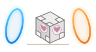

PLAYER 01
果_k / Guok
高中生 · 好奇心常驻
关于我的更多碎片也可以叫我 Guok，目前是一名高中生。
游戏、好奇心，还有日常里的一点快乐。
无论是从哪里发现的我，都欢迎保持联系。🍪
高中生 · 好奇心常驻
关于我的更多碎片
一个还在探索世界的普通人。
你好，我是果_k，
也可以叫我 Guok。
目前是一名命苦高中生。兴趣很多，包括游戏、AI、Furry(?) 和 SF（轻小说），还有一些奇奇怪怪的小爱好(？)
这个网站用来快速了解我，也是我的互联网生活记录。欢迎深入交流，本人可能比较抽象。
让日常变得有意思的，往往是这些小事。
玩过很多很多游戏，这里放几个常玩的。
以及，订阅服务何时降价。
Furry 和 SF（轻小说），个人爱好。
对于某些人也可能是雷点。
一些游戏里的风景，一些生活里的相遇。
* 那个白毛是本人
正在展示 9 张切片
你可以从这些地方找到我。
打个招呼，或者聊聊共同的爱好。
